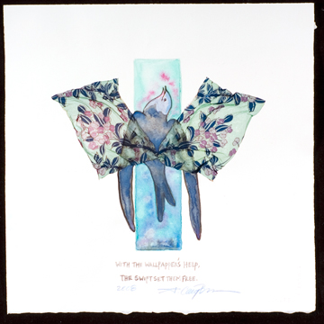
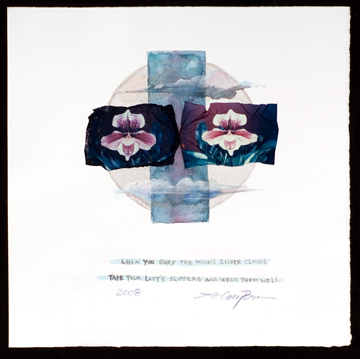
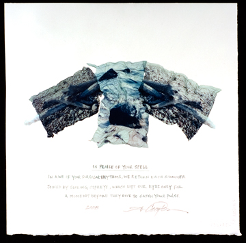
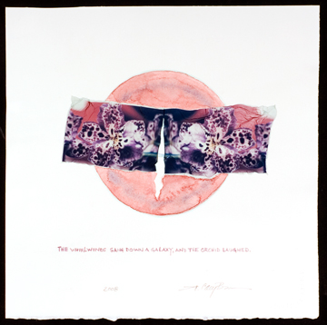

|
> Artists > Cary Brown > Images
Cary Brown

Images | Images 2 | Images 3 | Images 4 | Images 5 | Images 6 | Images 7 | Info
The Birds Sang Light and Other Messages of Wonder
(a traveling show)
-Martha Jefferson Hospital (Charlottesville, VA) March 20 - May 9, 2008
-National Institutes of Health (Bethesda, MD) July 4 - August 8, 2008
-Washington Cancer Institute (DC) September 4 - November 4, 2008
(Lillian Fitzgerald, curator)

Cary Brown, The Swift, 2008
polaroid emulsion lift and watercolor on paper
12 x 12"
SOLD
Artist Statement
Cary Brown
The Birds Sang Light and Other Messages of Wonder
(a traveling show)
2008
| |
- Nature is a setting that fits equally well a comic or a mourning piece. |
| |
|
-Ralph Waldo Emerson |
I was lucky to grow up on a farm in Kentucky where I was free to explore nature at my whim. Whether I was climbing beech trees, scaling fossil beds, searching for turtles, gazing at the constellations, my head was always filled with the magic of nature.
I began to draw at an early age with one of my grandmothers (also a painter), who is a naturalist so our subjects were often things from the woods and on the farm: giant poplars, horses, donkeys, flowers, leaves, clouds, and so on. She taught me that there was color in a shadow. Sometimes, I looked so hard I thought I could see wind.
After graduating in1984 from the University of Virginia with a BA in art history and studio art, I moved to New York City to study portrait painting at the New York Academy of Art. During that time, I desperately missed the country so I began painting made-up landscapes in my studio. When my husband and I moved to Charlottesville in 1993, I was delighted to return to nature. The glimmering light and enchanting spirit of Charlottesville, especially in the Spring, once again captivated me and I began to paint en plein air in the style of my professor, Richard Crozier. My mediums were pretty much oils and the occasional watercolors.
After a life-threatening experience in 2005 involving cancer of the appendix, I moved inward. I felt a need to take a closer look -- a need to really feel and see life and death. Instead of painting vast landscapes, I pushed into it. I began to read a lot of poetry. My appetite grew for that big question: What is this all about? What is reality all about? What's going on above us, below us, on the surface of an orchid, in the heart of a woodpile, in the mind of a bird?
So began my journey with this new work. Having studied photography at U.Va, I was drawn to the medium again when contemplating reality. The Polaroid emulsion process (explained in detail below) was a perfect match: it enhanced the ephemeral qualities, the elements of surprise and humor in nature. It allowed me to create wind and to be able to bend wallpaper, which seemed then to take on layers of reality infused with the strangeness of poetry that help things meet in that middle area of chaos and order, where truth -- perhaps -- hovers. I yearned to freeze all of that so I could study it. Of course, gradually the work began to take on a life of its own.
Through the process I began to consider the spirit in these objects -- the light, the love, the energy, the beauty, the magic-- in essence, the truth. I began by rolling out the Polaroid image(s) on paper. Then I'd sit back and let the piece speak to me. A story evolved: I would see it, hear it, and then go in with color, form, and sometimes words and bring the piece alive.
After this I began to comprehend Emerson, Eiseley, and Dillard, all authors whose words were meaningful to me. I followed their assertion to really, really look and be a conscious witness. In this way so much more will be given to you.
I kept exploring and came to the woodpile of an old ash tree we had to cut down on our farm. Here I mourn her in two pieces. In the last image, The Moo Piece, I saw through a child's eyes, where the innocence is, real intuition. I began to think of dreams, time travel, and the cosmos, then returned to my pot of boiling elements: wind and clouds bubbling in water, along with wood piles, donkeys, cows, flowers, birds, land, dust, and the laws of nature. I began to laugh, and it was then I knew I had been restored -- my soul had been fed and magically returned to its great capacity for joy.
| |
- ...man himself must be his last magician. He must seek his own way home. |
| |
|
-Loren Eiseley |
Polaroid Emulsion Lift Process
For these prints I used a Daylab printer to shoot my art work (a photograph or painting) on to 669 peel-apart Polaroid film. After the print dries for 8 hours, it is then boiled in distilled water for 3-4 minutes until the image begins to separate from its backing. The print is then transferred to a tray of cold water where the image is carefully rubbed off of its backing. What is left is a sort of jelly-fish floating in the tray- a gooey emulsion version of the print. This image is then manipulated onto a Mylar sheet and delicately transferred onto wet water color paper (or receptor of choice), where it is rolled out with a wet brayer and left to dry. The final piece can be sprayed with UV protective coating such as Krylon UV-Resistant Clear.

Cary Brown, Moon's Silver Clouds, 2008
polaroid emulsion lift, watercolor, and gouache on paper
12 x 12"

Cary Brown, Isabella Beach, 2008
polaroid emulsion lift and watercolor on paper
12 x 12"

Cary Brown, Laughing Orchid, 2008
polaroid emulsion lift and watercolor on paper
12 x 12"
SOLD
Images | Images 2 | Images 3 | Images 4 | Images 5 | Images 6 | Images 7 | Info
|